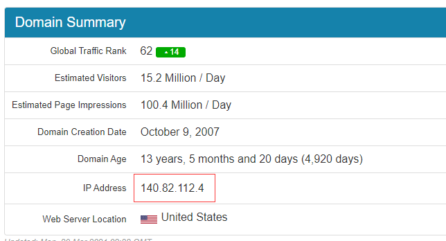

以管理员身份打开某文件
以hosts文件为例
某些文件直接修改会提示没有权限，此时可以用管理员身份进行修改
- hosts文件一般在c:window/system32/drivers/etc，打开至此文件
- 点击左上角文件选项卡
- 鼠标移至打开window powershell，选择以管理员身份打开
- 输入notepad hosts，打开之后就能修改该文件。
win+x可以直接打开快捷菜单，也能打开powershell面板
某些外网打开失败
以github为例
- 准备修改hosts文件
- 查询github网址：https://github.com.ipaddress.com/
 - 文件最后附上即可
140.82.112.4 github.com
- 本条参照https://zhuanlan.zhihu.com/p/158938544
github--->加速器
http://www.oniongeeker.com/2021/05/08/git-slow/
常用快捷键
| 快捷键 | 说明 |
|---|---|
| win + R | 打开运行对话框(可打开cmd等面板) |
| win + Tab | 显示所有已经打开的窗口 |
| win + Alt | 切换打开的窗口 |
| Ctrl + Shift + Esc | 打开任务管理器 |
| win + v | 多重剪切板 |
软技能
问题
CRLF是什么
MDN解释：
回车符（CR）和换行符（LF）是文本文件用于标记换行的控制字符（control characters）或字节码（bytecode）。
CR = Carriage Return，回车符号（\r，十六进制 ascii 码为0x0D，十进制 ascii 码为13），用于将鼠标移动到行首，并不前进至下一行。
LF = Line Feed，换行符号（ \n, 十六进制 ascii 码为 0x0A，十进制 ascii 码为10）。
紧邻的 CR 和 LF（组成 CRLF，\r\n，或十六进制 0x0D0A）将鼠标移动到下一行行首。（Windows 操作系统默认的文本换行符为 CRLF；Linux 以及 macOS 系统默认使用 LF，早期的 mac os 系统使用 CR 换行。）
相关链接
前端学习
MDN
语雀·一缕清风(强推)
一像素(偏个人文章类)
犀牛部落(文章教程含代码)
caibaojian
学习文章推荐(强推)
学习资源统计
常见缩写(感觉更合理一些)
常见缩写
css
小知识点(一些属性)
You-need-to-know-css(有小demo)
js
现代js教程
实现js原生方法
函数柯里化
构造函数、原型和原型链
自有属性、继承属性、枚举属性、不可枚举属性
promise题
手写promise
ES6+小技巧
js垃圾回收机制
js动画库
vue
vue后台管理权限校验与动态路由
vue实用自定义指令
vue + elementui后台
面试
系统
面试知识点（主js和算法）
偏各项理论（包括工程和一些业务思考）
js
vue
http
git
其他小东西
免费ppt模板
文档转换（包括视频转图片）
分流抢票
网站模板
网站模板
git报错
1、git warning: LF will be replaced by CRLF in 文件名
windows中的换行符为 CRLF， 而在Linux下的换行符为LF，所以在执行add . 时出现提示警告
删除文件.git
git config --global core.autocrlf false
重新执行git init和git add .